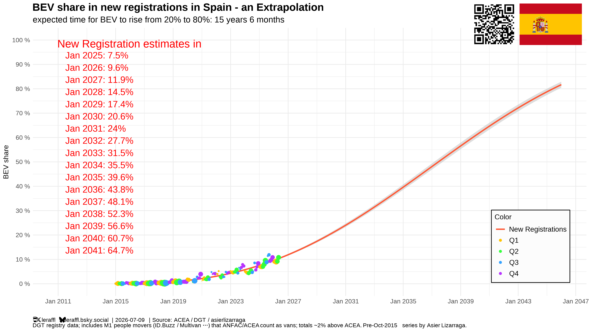
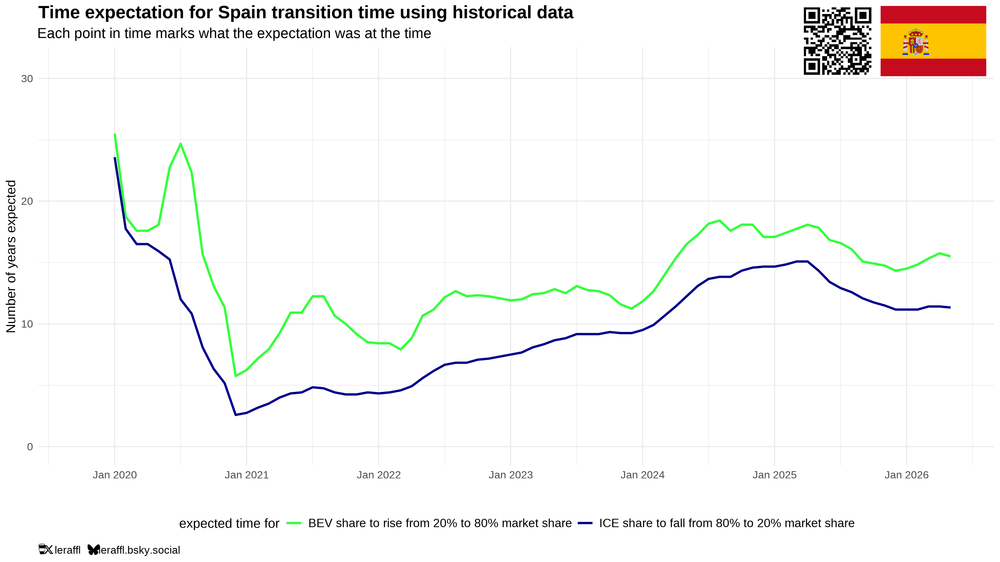
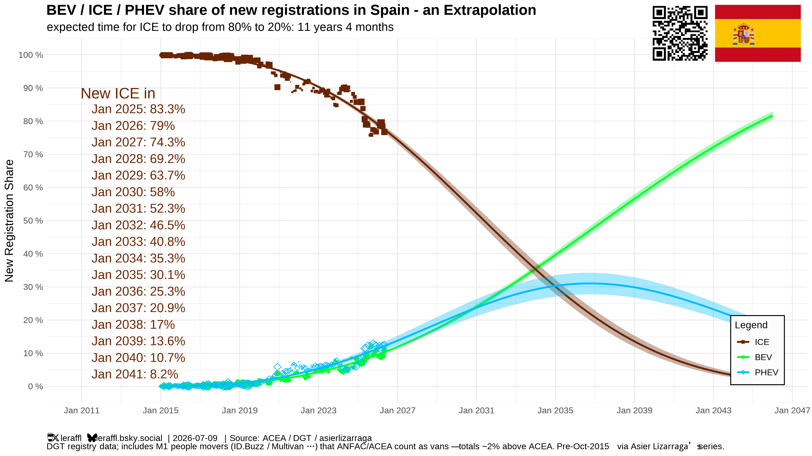
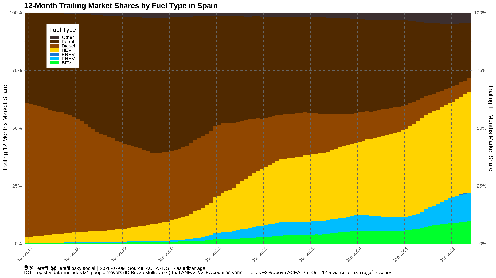
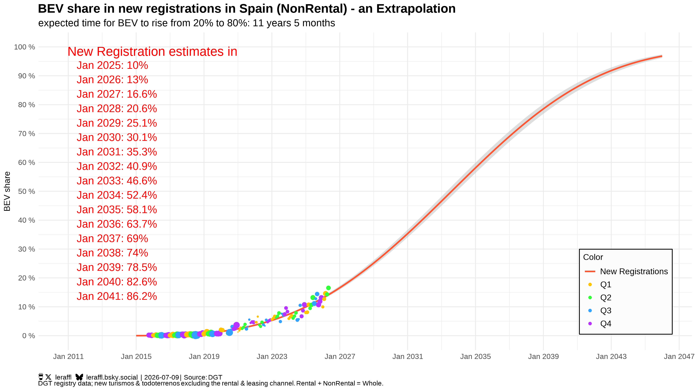
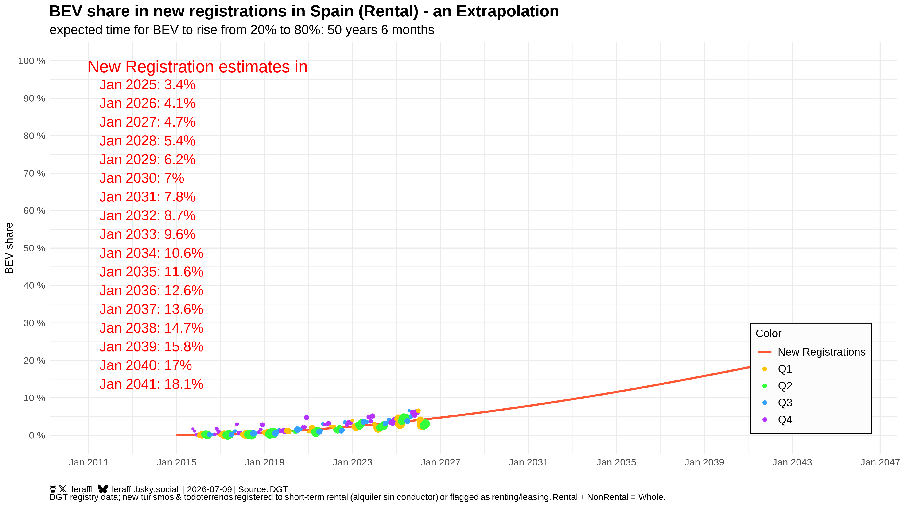
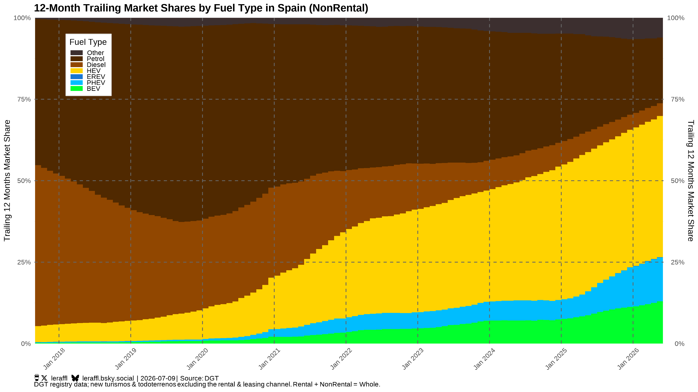
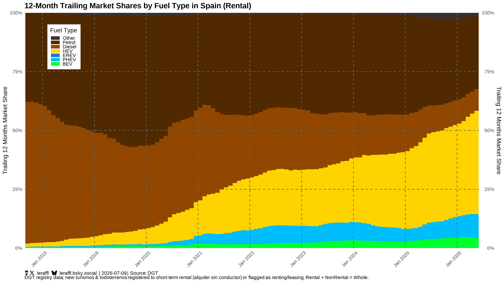

When I wrote up Italy's rental split last month, I ended with a prediction I couldn't check: "Spain is the obvious next place to look — comparable tourism, comparable geography, quite possibly the same hidden split. I don't have the data on that yet." Well, now I have the data. And it's quality data.
Before taking anything apart, though, let's establish what the headline view of Spain actually looks like. The Gallery draws four standard charts for every country, here they are for Spain, whole market, latest data as of 2026-07-11.
The state of play — four charts, one country

First, the trajectory. Spain's BEV share sits just under 10% on a trailing-twelve-month basis, and the fitted curve implies roughly 15–16 years to climb from 20% to 80% BEV share. That's slow. Not as slow as countries like Bulgaria, Latvia, Estonia, Croatia or Japan, but a kind of "regular kind of slow" so to speak.



And there it is, in the powertrain split: the thing absorbing Spain's combustion decline is not the battery car, it's the hybrid. Non-plug-in hybrids alone are 43.5% of the last twelve months — add PHEV's 12% and more than half of everything registered in Spain now carries some kind of electric motor, while pure BEV is stuck under 10%. Petrol is down to 24%, diesel to under 6%.
The way this usually gets narrated, in Spanish and international coverage alike, is a story about obstacles: charging that's too sparse and too slow, sticker prices that are too high, subsidy programs strangled by bureaucracy, and a general suspicion that Spain, a country of apartment dwellers + long distances + rental cars, just isn't built for BEVs. And so hybrids are said to be the sensible compromise[2]. It's not a crazy story either at face value. But two things in these four charts don't really fit in there, so they? First, the hybrid share: 43% is not what "buyers held back by obstacles" looks like, is it? No, it's what a market in the middle of a very specific migration looks like, and it's worth asking what's driving it. More on this a bit later. Second, the trajectory is visibly bending upward right now, the monthly BEV share hit 10.8% in May 2026. If infrastructure and prices were really the binding constraint for everyone, who exactly is it that's buying all these BEVs?
So let's take the market apart. Same move as Italy, split the registrations by channel: rental versus everything else.
The split
A quick word on definitions. In the DGT microdata, my Rental segment is every registration flagged as rent-a-car service plus every registration flagged as renting/leasing, together that makes 36% of the Spanish market over the last twelve months, even more weight than the roughly 1/3 rental carries in Italy. NonRental is the exact complement: mostly private buyers, plus direct corporate purchases. Rental + NonRental = Whole New Passenger Car Market [1].
Here's everything except the rental channel:

And the rental channel alone:

In Italy, the split turned a laggard into an ordinary market. In Spain, it does the same, except both parts are a bit faster. So strip out the rental fleets in Spain and the 20%→80% timer drops from ~15.6 years to ~11.5 years, with the 20% line crossed around 2028. For calibration: The entire EU market averages at about 17 years on that timer timer on current data (mostly dragged down by Italy). Spain's non-rental buyers are outpacing it by far! (Not a perfectly fair comparison, a sub-segment against a whole market, but that's exactly the point: Spain's headline number is a blend, and the blend hides this.)
The distance between the two versions of Spain is remarkable. Over the last twelve months, non-rental BEV share is 13.0%; rental is 4.3%. That's a factor of 3, where Italy's gap is closer to 1.5. And it's even widening: in May 2026 the monthly figures were 16.5% versus 3.1%. Five to one. Italy's was split into two speeds.
Why the rental fleets specifically
The mechanism is the one from the Italy piece, so I'll compress it: a private buyer opts in, they researched the car, they know where they'll charge. A rental customer opts into nothing. They land at an airport in a country whose charging network they don't know, get handed a car they didn't choose, and they drive off to god knows where. The car has to just work from minute one. And I don't mean that in a technology-sense, I mean that in a usability-sense. If it doesn't, the complaint lands on the rental company. So the rental company buys whatever cannot generate that complaint. In Spain that pressure is enormous, because Spain isn't just a tourism country, no, it's the second-most-visited country on Earth, and its rent-a-car fleet is one of Europe's largest.
You can watch this logic execute in the monthly data, almost like a lab experiment. Spanish rental registrations are fiercely seasonal: the fleets stock up in spring for the summer season with March as the biggest month of the year. About 62,000 rental registrations in March 2026 against 14,000 in sleepy August 2025. And precisely when the volume peaks, the rental BEV share collapses: 6.5% in quiet January 2026, then 4.0% in February, 2.8% in March, 2.6% in April. Meanwhile the hybrid share of those same spring purchases hit 48%. Same pattern the year before. Read that again: when Spain's rental fleets bought their 2026 tourist-season cars, they chose hybrids almost ten times as often as BEVs. That single procurement decision, repeated every spring across a third of the market, is a huge part of why Spain's headline number looks mediocre.
The charging picture: two networks, two verdicts
"But the charging!" ... *sigh* ... Yes, let's talk about the charging, because it also splits in two, and the two halves map exactly onto the two Spains.
The public network is the tourists' network, and it is the weak flank. Spain counted around 55,000 operational public charging points at the end of Q1 2026[3], having passed 50,000 around New Year[4] (growing double-digit percent per year) with the fast segment growing fastest: points in the 50–250 kW class more than doubled during 2025, and points above 250 kW nearly did[4]. That's what momentum looks like. But the density is still below where it should be and a large share of the installed charging is slow AC clustered where Spaniards live (Catalonia, Madrid, Andalusia) and not along the route a tourist might improvise. A visitor in a rented BEV faces the Italy problem: they can't know in advance whether their particular corner of Spain is the well-served kind, and just one stranding in a BEV, or even the fear of it, writes their opinion of EVs permanently. And the rental company is the one taking the blame by customers, so of course they don't want BEVs.
The private side is a different world, and it's the part that the "Spain is a country of apartments" objection misses. Since 2014, Spanish electrotechnical regulation (ITC-BT-52) has required new buildings with parking to include pre-installation for vehicle charging[5]. Under the horizontal property law, an apartment owner who wants a wallbox on their own parking space doesn't need the homeowner association's permission — they only have to notify it[6]. The outgoing MOVES III program subsidised home charger installations at up to 70–80% of cost right through the end of 2025[7]. Spaniards without any parking space exist, plenty of them — but the addressable population with a garage or a workplace socket is far larger than the objection implies, and for them charging is a solved problem.
And here Spain holds a card almost nobody in this debate plays: the sun. Solar photovoltaics delivered a record 19.1% of peninsular generation in 2025 — 27.1% in June, the highest monthly share ever recorded — and Spain keeps installing at record pace[8]. On sunny days, midday wholesale electricity prices routinely fall to nearly zero, which has made Spanish household electricity among the cheapest in Western Europe[9]. A car that charges at home overnight or at work at noon plugs straight into that. Spain is arguably the best place in Europe to own a car you plug in — provided you have somewhere to plug it. Which is precisely the line that separates the resident from the tourist, the non-rental curve from the rental curve. The infrastructure objection isn't wrong. It's just aimed at the wrong segment.
From diesel country to hybrid country
That leaves the first anomaly: the 43% hybrid share, the highest of any market I chart. Where does that come from? Well, to be honest, history mostly. A decade ago Spain was a diesel country — 63% of new registrations in 2015 were diesel. Then Diesel's reputation and resale values collapsed (remember VW Dieselgate? Yeah, that...), and within ten years Diesel share fell to under 6%. Two-thirds of the market had to migrate SOMEWHERE.
For a buyer burned once by betting on the "wrong" technology, the full hybrid is a seductive landing spot: no plug, no new habits, no range questions, a familiar brand promising familiar reliability with a green sticker on top. It is genuinely practical and that makes it dangerous. The migration went diesel → hybrid, not diesel → BEV, and how could it even? BEVs weren't yet a mass market thing, that only came with the Tesla Model 3. So it went that way in every channel: hybrids sit at 43–44% among private buyers and rental fleets alike.


This is the real counterweight to Spain's acceleration (not the charging post). A 43%-of-market comfort zone that feels like progress can delay the actual switch for years. You could maybe call it "the bridge becomes the destination" or something like that? At least it'd feel like that for people. But the early data from the buyers who choose freely is encouraging: among non-rental registrations, plug-in share (BEV plus PHEV) went from 16% to 27% in a single year. Where people opt in, the plug is winning ground quickly. The hybrid wall is being eaten from the private side.
The trap, drawn out
You don't actually need Spain's data to see how a hybrid trap like theirs forms though — a back-of-envelope model is enough, and I sketched this one out quite a while ago too. Picture a market that starts 100% combustion. Now picture that every year a fixed slice of ICE owners switch to a hybrid, a smaller slice jump straight to a BEV, and a slice of the people already in hybrids finally make the jump to a BEV. Three numbers, nothing else, applied year after year.
That imaginary market would be 100% guaranteed to end up not with hybrids, but with BEVs. But thinking that we'd necessarily see BEV dominate no matter when we look at the market, that's a trap. The trap lives in the gap between two of those numbers. If people move from combustion to hybrid faster than they move from hybrid to BEV, hybrids pile up in the middle and a bulge that can dominate the market for a decade before it drains can emerge. Drag the sliders below and see what influence each of the transitions has. The one that decides things is Hybrid → BEV: choke it and the green BEV band is held back for years behind a fat amber wall, but open it and the wall dissolves and the market flips to BEV in a handful of years. That#s important to note for Spain especially, because that means that Spain has enormous potential to transition to BEV fast!
Spain is living in the fat part of that amber band right now: hybrids near their peak at 43%, plug-ins climbing underneath. Which way the next few years break comes down to exactly the rate the model makes you feel — how quickly today's hybrid buyer comes back for a BEV next time. And that's the useful reframe, because almost everything in the next section is really a lever on that one transition rate.
The levers Italy doesn't have
Italy's article ended in frustration: the fixes existed, but nobody seemed to be reaching for them. Spain's position is better, for three reasons that hardly ever make it into the standard narrative.
- Plan Auto+ launches this month. MOVES III, the old subsidy scheme, was notorious for its bureaucracy. Buyers fronted the full price and waited, sometimes years, for reimbursement from regional governments. Its successor, announced in December 2025 under the national Auto 2030 strategy[10], flips the model and now the discount is applied by the dealer at the moment of purchase, funded centrally, retroactive to January 1, 2026, with the rules due in the official gazette in early July[11]. Up to €4,500 for a private BEV buyer without scrapping, up to €7,000 with a scrapped old car, on cars up to €45,000 before tax, and dealers must add at least €1,000 of their own[12]. There's a caveat to it though: the retroactivity means a large chunk of the €400 million budget is reportedly committed before the window even opens, and the pot may run dry in autumn[13]. Still, a purchase incentive that works directly at the till, in the same year the non-rental market is already accelerating on its own, is fuel on a fire that's already burning.
- The solar dividend. Covered above, but it belongs in this list: cheap midday electricity is a structural, permanent, widening advantage that no Northern European market can copy, and it compounds with every wallbox installed.
- A domestic car industry with skin in the game. Spain is one of Europe's largest car producers. Small electric cars are now rolling off Spanish lines (SEAT/Cupra in Martorell among them for example) and the Auto 2030 plan explicitly targets an "affordable Spanish electric car"[10]. Italy's transition threatens its tourism industry but Spain's transition (at least if done right) feeds its manufacturing industry. The political economy points the other way here.
The Italy checklist, applied
The Italy article closed with four portable rules. Spain is the first market I get to test them on, so let's score it, shall we?
- "Find the drivers who didn't opt in — they're an early-warning indicator." Yup, found them: 36% of the market, frozen on a fifty-year curve, buying hybrids by the tens of thousands every spring. The indicator is flashing.
- "For a tourism economy, prioritise DC coverage where people drive, not where your population lives." This one if half-happening. Fast charging is the fastest-growing segment of the network, but deployment still follows Spanish residents rather than tourist corridors and islands. Nothing in the current policy mix targets this directly. Doesn't get much clearer than this in terms of "What should we do?"
- "Cap ad-hoc prices." Yeah, nah. This one isn't happening. A tourist without a subscription app and any clue still faces surprise pricing at the post. Same gap as Italy. (Except Tesla of course, the Supercharger network works wonders, but you can't transition a country on one foreign produced manufacturer alone. Even if you tried, only a portion of customers would want that.)
- "Build the network before scaling purchase incentives or mandates." Spain is running the experiment in the opposite order: Auto+ scales purchase incentives now, while the tourist-facing network still lags. For the private market that's the right call. Their charging is solved at home. But the subsidy just accelerates what's already moving. For the rental third, Auto+ changes nothing: no fleet quota, no corridor build-out, no pricing rule. The frozen curve stays frozen by design. (Again: Tesla proved how to do this correctly a decade ago.)
Score: Maybe two out of four? And with the two clear misses concentrated exactly where Spain's problem segment is. Spain has, probably by accident, built a policy mix that's excellent for the market that was already fast enough while being irrelevant for the market that's stuck.
What happens next
So Spain is not "a slow-ish BEV market with charging problems". It's a fast private market and a frozen rental market wearing a single trend line, with a forty-percent hybrid cushion muffling the whole thing. The blended headline number will keep looking mediocre for a while. That's just how numbers work. At least as long as a third of the market buys tourist hybrids every spring.
Three things to watch over the next 12–18 months, all of them visible in these exact charts as the Gallery updates monthly. First: does Plan Auto+ push the non-rental monthly BEV share past 20%? It was at 16.5% in May, before a single EUR of the new scheme was paid out, the fitted curve extrapolates to 2028, but I wouldn't be surprised to see it earlier. Second: does anything unfreeze the rental curve? Maybe a big fleet order, a quota, a corridor program? Until something does, treat every "Spain is slow" headline as a statement about rental procurement, not about Spaniards. Third: does the hybrid share finally peak? That's the number the whole transition hinges on because as you have seen Hybrid → BEV matters more for Spain than ICE → Hybrid or ICE → BEV and a Hybrid peak would finally mean that the Hybrid → BEV part becomes strong.
Italy's split ended with "the people are fine — worry about your tourism." Spain's version is a bit better: the people are in a good position as the sun is subsidising them daily, and the cavalry of cheap Spanish-built EVs plus at-the-till discounts is arriving. Now give the tourists somewhere to plug in, and Spain's two stories can finally become one. And a really goo one. Spain has unused potential.